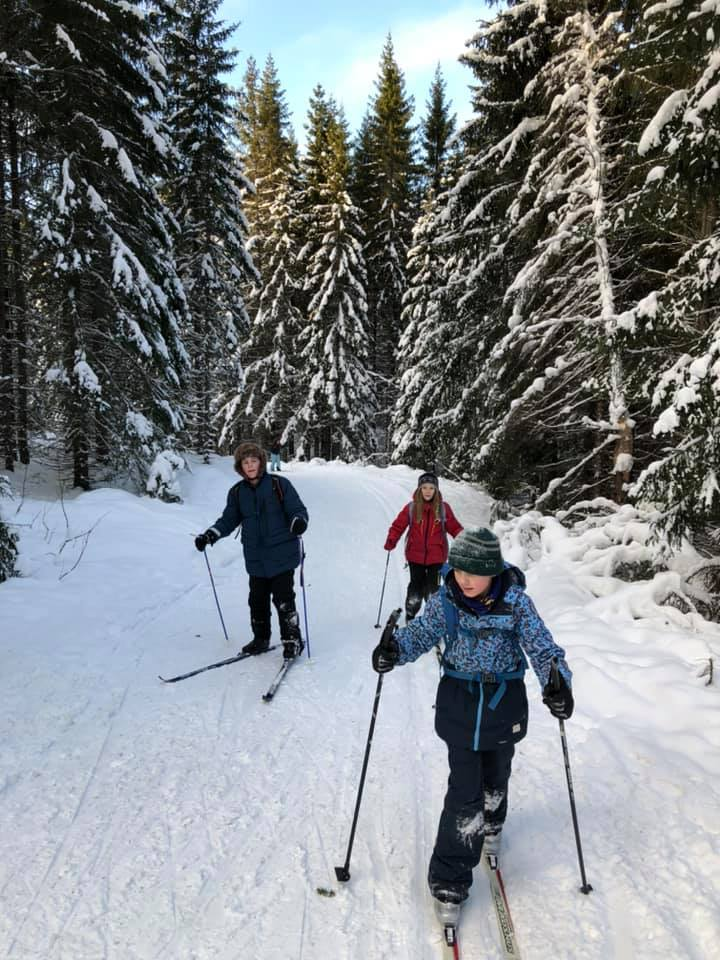
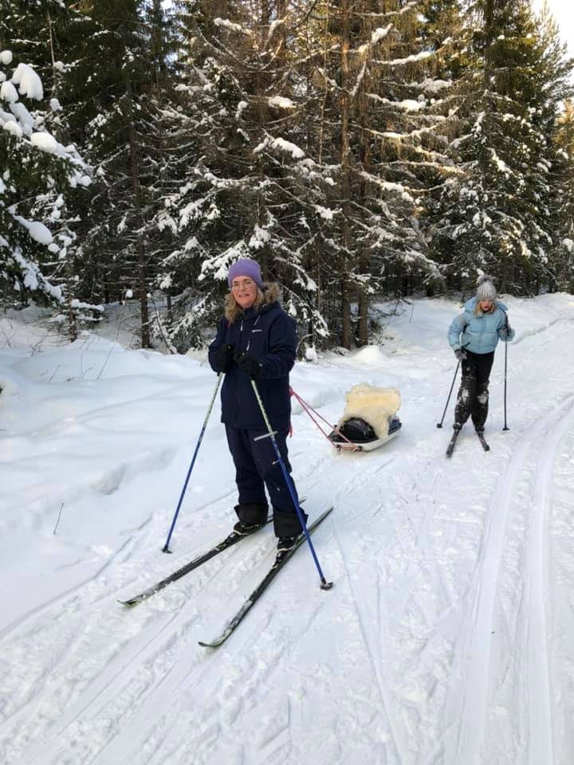

19.01.2021
Turdag for 4.–5. trinn



Den 14. januar gikk 4.–5. trinn tur til Breivann. Lærerne meldte om en flott dag i frisk luft, med strålende vær.
Elevene var ustoppelige i løypene, og dagen ble en fin opplevelse for både store og små.